|
|
So far in these tutorials we have seen how to use the imbedded web browser and the note editor as a place to attach personal notes. With the image and PDF annotation tool, however, we move from linking notes in a general way to another resource (via a note or web-page's reference area) to attaching a note to a specific location in a resource. We distinguish this from note taking by calling this process annotation. Both Pliny's image and PDF annotation tools allow a resource can be attached to a specific 2D area on an image or on a page in a PDF file.
To use the image annotation editor in Pliny on an image one must first associate the tool with the image you wish to annotate -- the image becomes a Pliny resource, and the process is called "importing an image into Pliny". This task is can be done through any one of three mechanisms:
In all three cases a copy of the image will be cached in Pliny's data storage area for its internal use, so it will not matter to Pliny whether the image continues to be where it was imported from or not.
We describe these three alternatives below.
Suppose you have located a web page in Pliny's imbedded browser that contains an image that you wish to annotate. Here is such an image (well, the top of it anyway!), from the Corpus of Romanesque Sculpture in Britain and Ireland (http://www.crsbi.ac.uk):
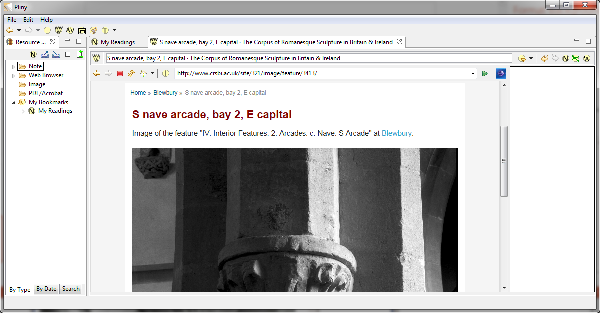
It shows a capital of a column in the church of St. Michael in Blewbury, Berkshire.
To load the image into Pliny locate the "Make into Image" button in
the browser's control panel ( ) and
press it. This invokes Pliny's image importing process which takes the HTML
page currently displayed by the browser, processes it to locate appropriate
image or images on the page, and sets it/them up as one or more image
resources. See the subsection below What the importer does in this
tutorial to find out what happens in more detail.
) and
press it. This invokes Pliny's image importing process which takes the HTML
page currently displayed by the browser, processes it to locate appropriate
image or images on the page, and sets it/them up as one or more image
resources. See the subsection below What the importer does in this
tutorial to find out what happens in more detail.
Sometimes, as in this case, Pliny finds more than one image that might be a candidate for importing on a particular web page. If so, Pliny will create a dialog box which lists the possible images and allows you to choose the one or ones you wish to import. Here is the dialog box Pliny shows us for the web page showing above:
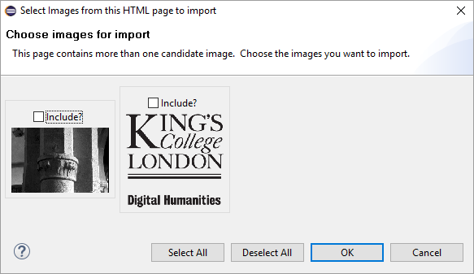
Pliny shows us two images as thumbnails. Obviously (to us!) the first one is the one we want to import. Choose the first one by clicking in its selection box and click on the OK button. If there had been more than one image from a web page that you want to import you can simply choose more than one.
If you find an image of interest in a web browser outside of Pliny you can use drag and drop action to load the image from there into Pliny as well. The following diagram illustrates the process:
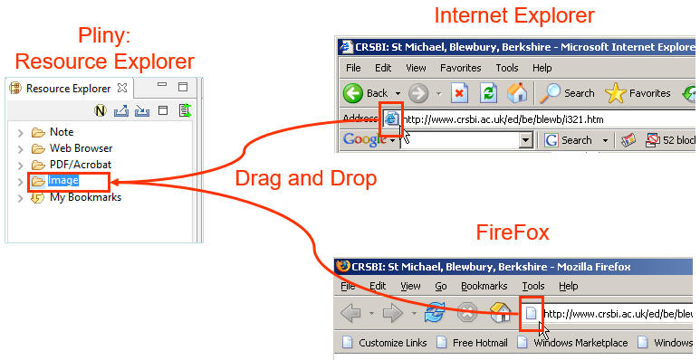
In your web browser locate the Location Bar which will be showing you the URL of the page you are currently viewing. The illustration shows the location bars as they appear in Internet Explorer and FireFox. To the left of the URL you will see an icon (here indicated with a orange box). Point your mouse pointer at it and drag it until you can drop it on top of the Image folder in Pliny's Resource Explorer. This act will be interpreted as a request to Pliny to take the HTML referenced by the URL and load appropriate image(s) that it finds referenced there into Pliny.
If you prefer, you can ask Pliny to load only a particular image you found on the web page and ignore the contents of the rest of the page. To do this, point your mouse pointer at the particular image you wish to load and then drag it to the Image folder in Pliny's Resource Explorer.
You can also import an image that you hold on you machine's own disk by locating its icon in a folder and dragging that icon to the Image folder in Pliny's Resource Explorer.
Dragging and dropping either an image or a URL to an HTML page that contains an image (as described above) starts up Pliny's image importer. If we invoked the importer with our example HTML page examples above the importer will generate a Pliny image resource, and automatically open it for us, resulting in:
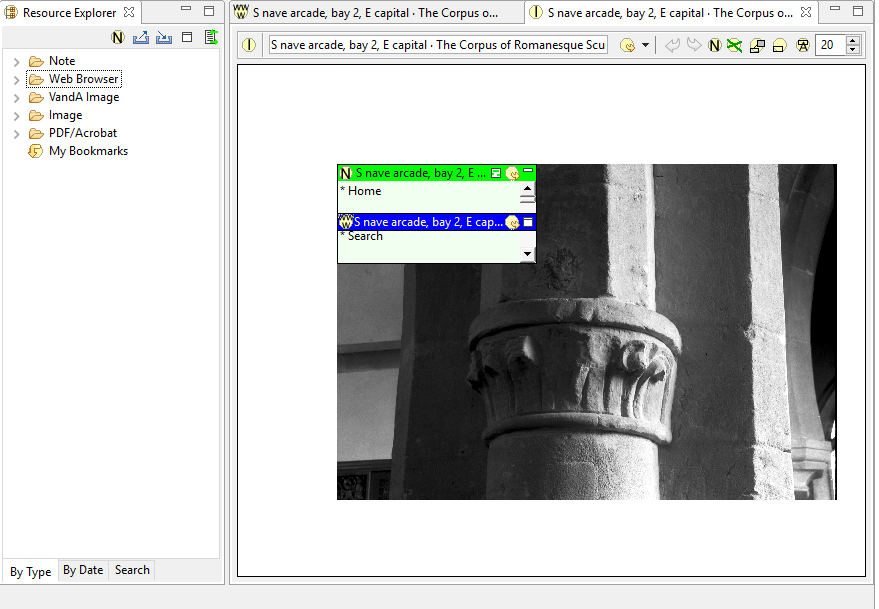
At first glance the result looks very similar to the original HTML-driven display. Like the Pliny web browser, Pliny's image annotation tool has a large area to display the resource (here, an image), and above it is Pliny's tool bar that contains a set of annotation tools to the right, and the name of the current resourse in a field close to the top left area. However, although one can see similiarites between Pliny's web browser, and its annotation tool, there are also some immediately visible important differences:
As we shall see shortly, the two references that the importer has automatically created for us can be removed (by clicking on them to select them and then pushing the Delete key) if we don't find them useful, or they can be moved/resized. Furthermore, the first of the two is a note and so its contents can be altered for our purposes.
Note here that the importer was given a full HTML page that contained an image -- not just a specific image itself. If the HTML page contains more than one appropriate image than the importer will create more than one image resource from that web page. Here, however, the HTML page contained only one appropriate image so only one image was imported. What is meant by "appropriate image" here? The main criteria is size. Images are often used on HTML pages purely for decoration, and generally these images for decoration are small. Thus, the image importer ignores images smaller than 100x100 pixels in size. If you find that the importer has loaded several images from a page and you only want one the easiest solution is to simply use the Resource Explorer to locate and delete the unwanted ones.
Now that we have an image resource we might well want to fix up what the image importer has created for us:
This results in:
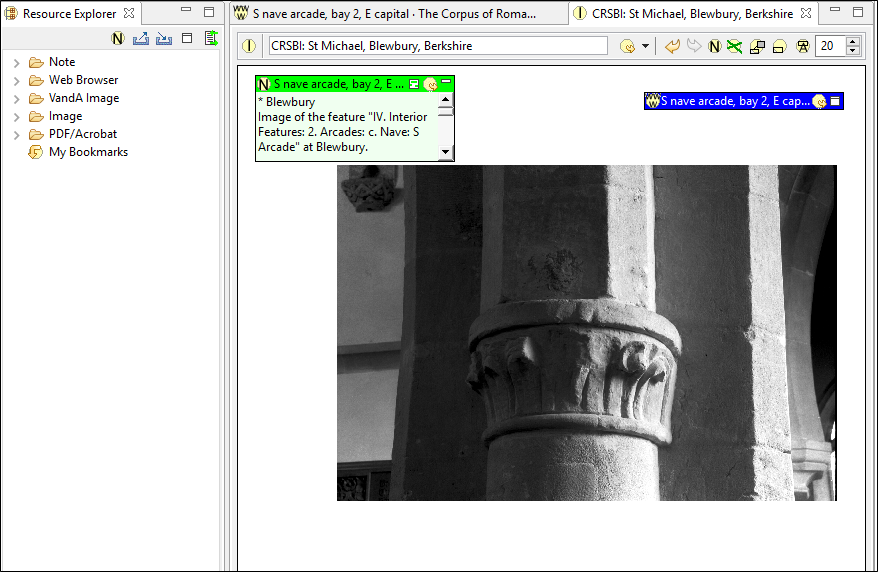
It is important to understand that the importer has created three different resources for us:
Although the importer has created three resources for us, and provided them initially all with the same name -- derived from the HTML title -- they are actually three separate resources. We just changed the name of the image resource itself, but we can also change the name of the other two as well as we see fit.
Suppose we wish to note the use of a leaf motif in the carving on the capital. With the image annotator we can create an annotation to do this. An annotation in Pliny contains three parts:
To create the annotation we first must click on the Annotation button in the toolbar:
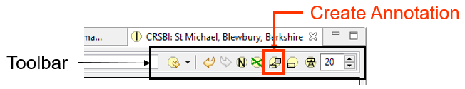
Alternatively, we could push the F7 key which acts as a keyboard shortcut to the Create Annotation action. Having clicked on this icon to indicate that we wish to create an annotation we use the mouse to drag out over the area where we wish the anchor to appear:
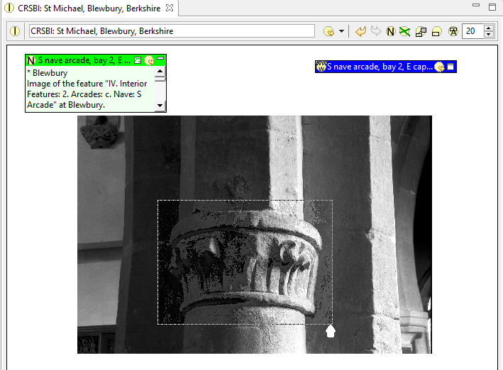
.. and then release the mouse button when we have defined the area where the anchor is to go. As a result, Pliny will create (i) the anchor where we have requested it, (ii) an empty note, and (iii) a line that connects them:
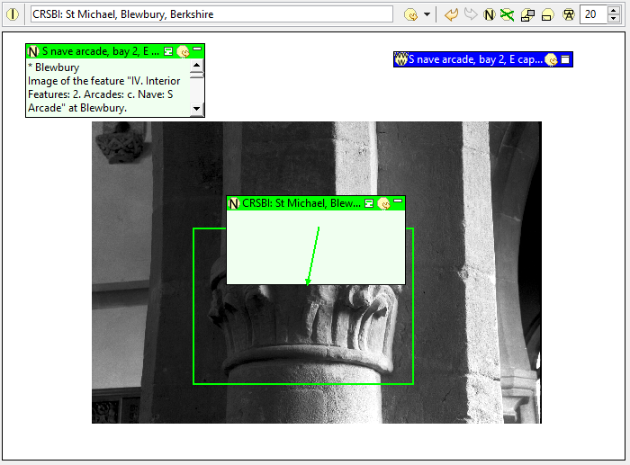
Pliny has placed a anchor area, link, and note on the image. We now have some fixups to do:
This results in:
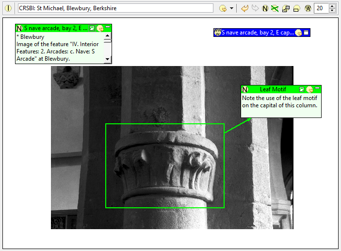
We have moved the note part of the annotation -- but the anchor part is also resizable and moveable if needbe. So, if we didn't get it placed exactly right, we can fix that.
We have described an annotation as consisting of a note, an anchor and a connection between them. Although there is a single button that can be pushed to create an annotations 3 components in one go, the three pieces can be separated created as well through buttons on the image annotator's annotation area toolbar:
There is no restriction to an annotation having only one note, one anchor and one connection. You can draw more than one connection line between either multiple anchors from one note or multiple notes to one anchor if that is useful. You can delete any connection if you wish by selecting it and pushing the Delete key.
Notes can also appear that are not anchored to any part of the figure. Suppose, for example, that we wish to add a further note to this image that quotes a bit of CRSBI's web page discussion of these columns. To do so we click on the Note button, drag out where we want the note to appear on the image, and then edit the note contents and title:
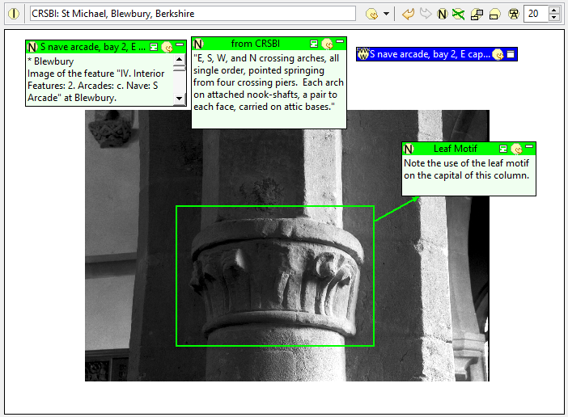
You can add as many anchors, notes and connections as you need for your purposes, of course.
In this tutorial we have only created one image resource, but one is enough to allow us to examine how image resources are handled in the Resource Explorer:
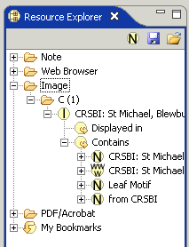
Note that the Image folder is the place where all image resources are
stored. If we open the Image folder we see the "C" folder. Image resources are
organised by the Resource Explorer by the first letter of their name (the same
as we have seen for Notes and Web pages) -- and the single image resource we
currently have has a name that starts with "C". When we open the "C" folder we
see the single resource, with its idenifying icon ( ). If we open this we see the same two groups
we saw within a note: Displayed in shows all the other resources that
have a reference to this image resource (currently there are none, so this is
empty), and Contains which shows what resources are contained in this
image. Inside the "Contains" item is the list of notes and other resources that
appear "on" the image. We can see here the three notes we have currently on the
image, and the one reference to the web page resource which also appears
there.
). If we open this we see the same two groups
we saw within a note: Displayed in shows all the other resources that
have a reference to this image resource (currently there are none, so this is
empty), and Contains which shows what resources are contained in this
image. Inside the "Contains" item is the list of notes and other resources that
appear "on" the image. We can see here the three notes we have currently on the
image, and the one reference to the web page resource which also appears
there.
You can use the image object in the Resource Explorer in three ways:
The Resource Explorer will always provide you with a reference to all the image resources your version of Pliny currently holds, but they will be filed by their name. As the number of image resources gets large you may want to keep track of them in other ways. Suppose, for example, you want to file the images, and group them by the kind of image -- say, grouping all the architectual images together. In Pliny one does this by creating an object (usually a note) that contains images you want to reference. Furthermore, any of these reference notes can appear as a Pliny bookmark so that they can be quickly accessible.In this part of the tutorial we will begin to build such a structure. The process is almost the same as that used to create the "My Readings" note in the previous tutorial.
We begin by using the Note button in the Resource Explorer (be sure you click on the right "New Note" icon -- there are probably several "Note" icons on your Pliny screen and you want the one in the Resource Explorer pane!) to create a new note called "My Images", and at the same time asking for it to be stored as a bookmark:
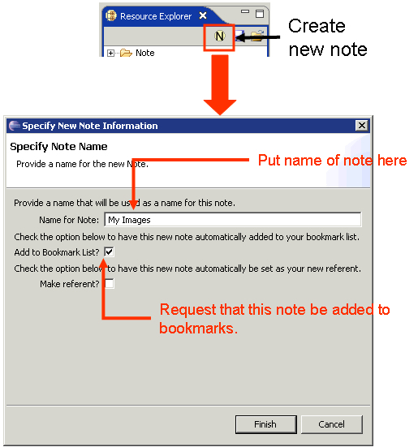
As a result Pliny will create the new note, and put it a reference to it in the bookmarks:
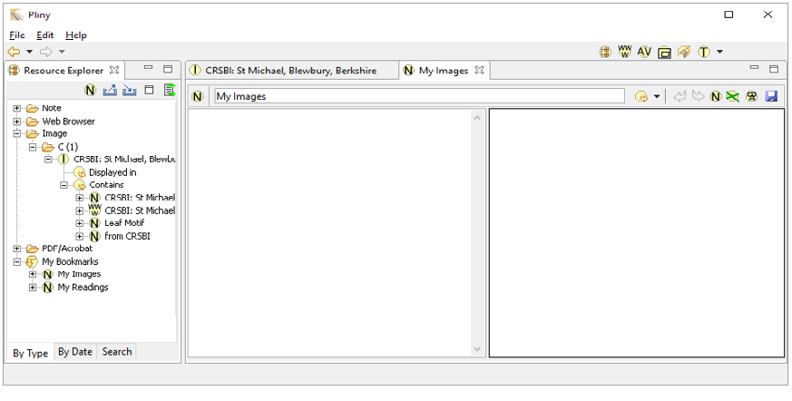
This is the note we will use to hold organise referenes to images in ways that suit our own interests. We add some content text in the left-hand content area to this effect, stating that "My Images" is a top level holder for all images we are using in our current study.
Now, we wish to create a category Architectural which will hold references to all architectual images we will be collecting. We want to put our new Archectural container within the My Images reference area, so the easiest way to achieve this is to on the New Note button in the Note Editor's tool bar and draw out a new note in "My Images" reference area. We then change the name of this new note to "Architectural", and add a brief description of it for the note's textual content:
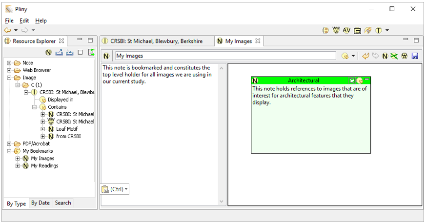
Now, we wish to use the Architectural note reference here as
a container for images that we consider architectural. To change the reference
object to its container format we click on the "Map Icon" ( ) in Architectural's reference object. This
changes the way the reference object appears -- hiding the note's content, but
showing its reference area in its place:
) in Architectural's reference object. This
changes the way the reference object appears -- hiding the note's content, but
showing its reference area in its place:
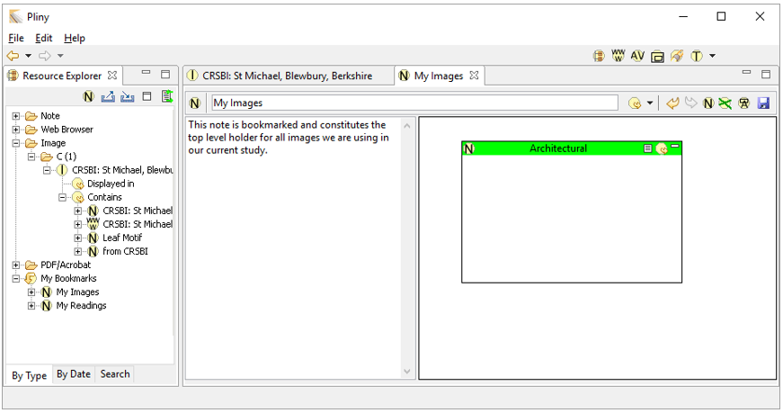
Now we are ready to file a reference to our image. Locate the item in the Resource Explorer and drag it into the "Architectural" note's reference area:
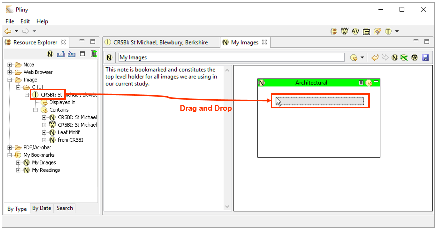
As a result, a reference to our image will be stored in the Architectural note within the My Images note. We can see the reference both in the reference area for My Images and within the Contains display in the Resource Explorer.
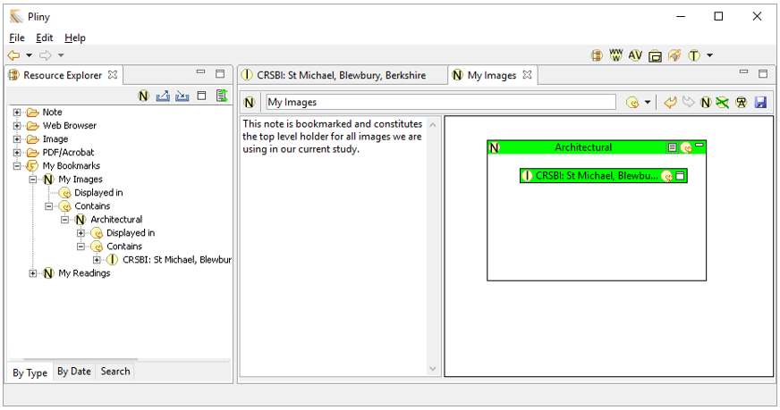
Furthermore, we can use either reference (in "My Image" or in the
Resource Explorer) as a way to open the image resource whenever we like
-- by double-clicking on the entry in the Resource Explorer, by double clicking
on the  in the reference object
itself, or by choosing "Open Selected" from the context menu in the reference
area while the item we wish to open is selected.
in the reference object
itself, or by choosing "Open Selected" from the context menu in the reference
area while the item we wish to open is selected.
Pliny supports the creation of image resources which can be annotated. Image resources can be created from images held on your hard disk, or harvested from web pages fetched from the WWW. Annotation on an image object combines note creation with the ability to link to a spot on the image by means of an anchor. Image resources appear in the Resource Explorer in the Image folder, but you can create a kind of "master" note to hold, say, all images of a certain kind, and add this master note to the Pliny bookmarks. In this way, you can file your images in a way that better suits your particular needs.
 |
| Pliny Help Pages by John Bradley are licensed under a Creative Commons Attribution-Noncommercial-Share Alike 2.0 UK: England & Wales License. |